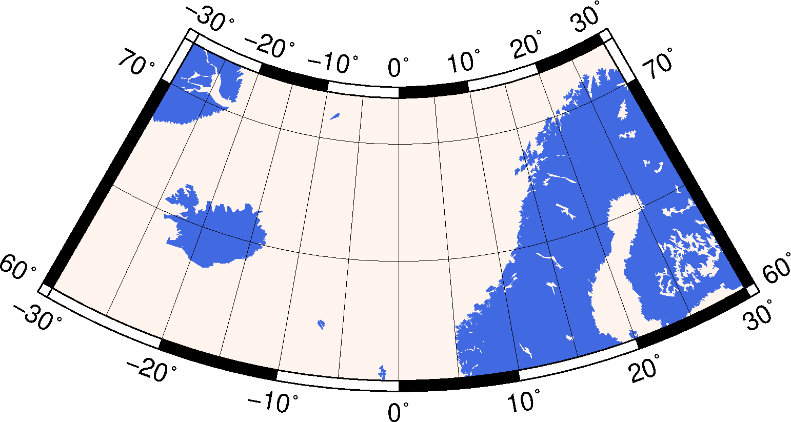
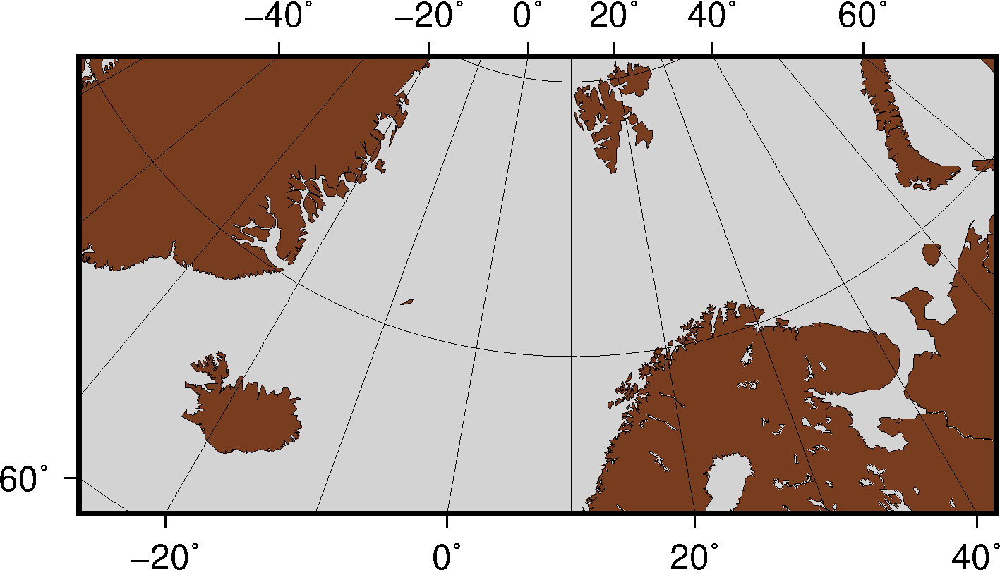
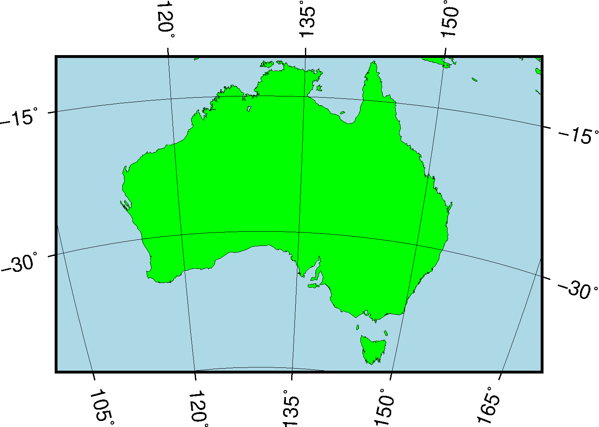

9.22 -Js：立体等角投影¶
维基链接：https://en.wikipedia.org/wiki/Stereographic_projection
此投影是保角方位投影，主要用于绘制南北极区域。在两极，所有经线都是直线，纬线则是圆弧。
该投影的参数:
-JS<lon>/<lat>[/<distance>]/<width>
-Js<lon>/<lat>[/<distance>]/<scale>
<lon>/<lat>投影中心的经纬度<distance>地图边界到投影中心的角度，默认值为90度<scale>可以是1:xxxx也可以是<radius>/<latitude>（<radius>是投影中心到纬线<latitude>在图上的距离），还可以是<slat>/1:xxxx（指定在标准纬线<slat>处的比例尺）
9.22.1 极区立体地图¶
下面的示例中，投影中心为北极，地图边界与经线和纬线完全重合。
gmt pscoast -R-30/30/60/72 -Js0/90/4.5i/60 -B10g -Dl -A250 -Groyalblue \
-Sseashell -P > GMT_stereographic_polar.ps

极区立体保角投影
9.22.2 矩形立体地图¶
与Lambert方位等面积投影类似，也可以通过指定地图区域左下角和右上角的坐标来绘制一个矩形区域。
gmt set MAP_ANNOT_OBLIQUE 30
gmt pscoast -R-25/59/70/72r -JS10/90/11c -B20g -Dl -A250 -Gdarkbrown -Wthinnest \
-Slightgray -P > GMT_stereographic_rect.ps

矩形边界下的极区立体保角投影
9.22.3 一般立体地图¶
gmt set MAP_ANNOT_OBLIQUE 0
gmt pscoast -R100/-42/160/-8r -JS130/-30/4i -Bag -Dl -A500 -Ggreen -Slightblue \
-Wthinnest -P > GMT_stereographic_general.ps

一般立体投影